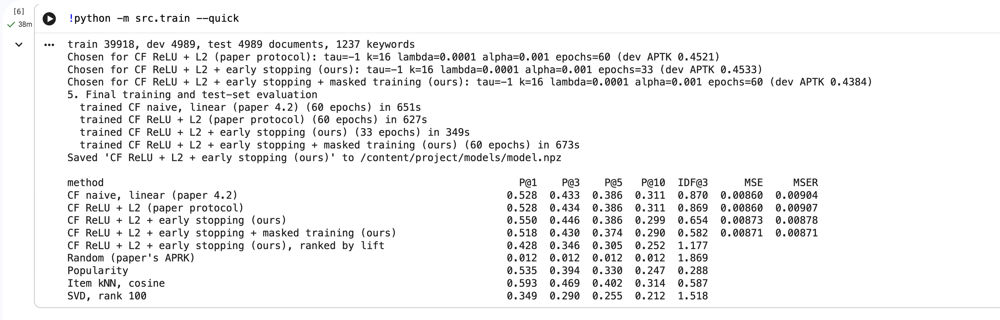
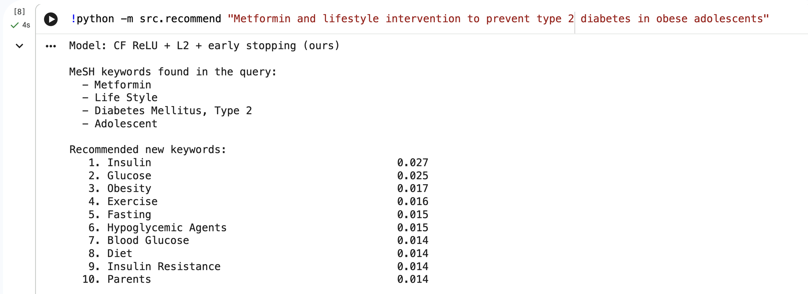
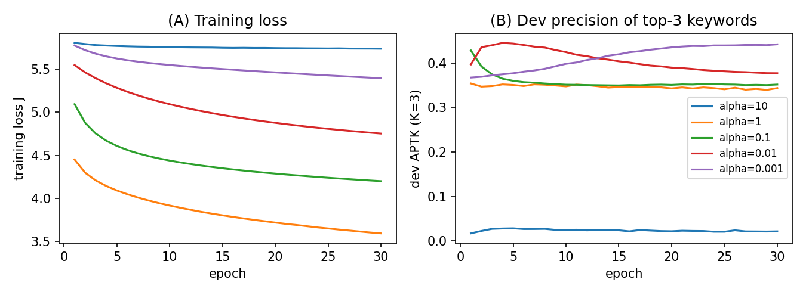

Researchers look for earlier clinical trials similar to their own before starting a new one, but their search queries often leave out relevant medical terms. In our data, 59% of the trials that mention both metformin and type 2 diabetes also mention insulin, a word a searcher might not type. The aim of this project is to recommend those missing keywords: given the medical keywords in a query, predict which other keywords usually appear with them, so they can be added before searching. We implement the collaborative filtering model proposed by Xiao Zhou (Stanford CS229, 2020) and test it on real trial records.
| Source | ClinicalTrials.gov API, downloaded on 11 October 2026 |
|---|---|
| Records used | The first 50,000 trials returned by the API, out of 606,601 registered |
| Text used per trial | Brief title, official title, brief summary, detailed description, conditions, eligibility criteria |
| Keyword vocabulary | MeSH 2026 (Medical Subject Headings): 30,512 terms with 265,712 names and synonyms |
| Keywords kept | 1,237, the ones found in at least 0.5% of trials |
| Trials kept | 49,896 with at least two keywords (median 25 keywords per trial) |
| Split | 39,918 training, 4,989 validation, 4,989 test |
Keywords are found by matching trial text against every MeSH name and synonym, so "breast cancer" and "Breast Carcinoma" both become Breast Neoplasms. Two cleaning steps were needed. Abbreviations are matched case-sensitively, so the "who" in "patients who" is not read as WHO. And 50 common words that MeSH uses in a different sense are ignored on their own: "will" was being read as Volition in 67% of trials.
Each trial becomes a column of TF-IDF scores, one row per keyword. The model predicts each keyword's score in a trial from the other keywords in the same trial:
R̂ = ReLU((W ⊙ Θ) R + b)
The project is written in Python with NumPy, Matplotlib and Streamlit, with one module per stage:
| File | What it does |
|---|---|
| src/fetch_data.py | Downloads the trial records and the MeSH vocabulary |
| src/mesh.py | Finds MeSH keywords in text |
| src/build_matrix.py | Builds the TF-IDF matrix and the training, validation and test split |
| src/model.py | The collaborative filtering model and gradient descent |
| src/evaluate.py | Hides keywords, measures precision@K, and the baselines |
| src/train.py | Hyperparameter search, final training and test results |
| src/recommend.py, app.py | Command-line tool and Streamlit web demo |
The whole project runs on Google Colab with the notebook colab_run.ipynb. On Colab's free CPU, training the final models takes 38 minutes (Figure 1). The full hyperparameter search, 74 training runs, took 28 minutes on a laptop. A test file checks the gradient calculations.



Reference: X. Zhou, "Collaborative Filtering on Keywords Recommendation for Clinical Trial Records", CS229 project report, Stanford University, 2020.